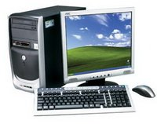

(с) Громашев Сергей

Наступил век высоких технологий - век компьютерной техники. Каждый пользователь обязан хорошо знать устройство компьютера и уметь работать на нем.
Компьютеры помогают нам на работе - автоматизируют сложные математические вычисления и процессы.
Компьютер стал незаменимым предметом в домашнем быту, для развлечения, общения по интернету, игр, просмотра любимых видеофильмов, прослушивания аудиомузыки.
Компьютерная техника развивается очень быстрыми темпами. Но все же есть и главный недостаток такого быстрого прогресса – это быстрое старение компьютерной техники.
Не успел счастливый обладатель очень мощного компьютера нарадоваться приобретением, как через некоторое время комплектующие теряют свою актуальность.
В связи с этим компьютеры приходится периодически модернизировать, покупая новые комплектующие на смену устаревшим.
При этом мы можем самостоятельно провести модернизацию зная устройство нашего компьютера.
Самостоятельная компьютерная помощь, как сборка компьютера, обслуживание компьютера требует ответственного и грамотного подхода.
В то же время, грамотно произвести модернизацию и выбрать нужные элементы, могут далеко не все.
Эти материалы предназначены пользователям, интересующимся из чего состоит компьютер и новинками компьютерной техники.
Вы узнаете, как самостоятельно собрать компьютер, подобрав для этого необходимые комплектующие, как повысить быстродействие компьютера, заменив отдельные комплектующие.